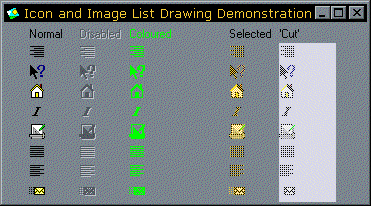

Icon and ImageList Drawing Sample (13K)
Icon and ImageList Drawing Sample (13K)
 25 Nov 2002
25 Nov 2002
Updated to describe problems with VB6 ImageLists.

Draw disabled, colourised and dithered icons with the DrawState GDI function
Simplifies drawing icons in the different states using VB.
This sample demonstrates how simple it is to draw disabled, colourised, selected and dithered icons from Image Lists. The VB Image List provides a method to draw an item selected, but doesn't give you very much flexibility from there.
The secret of quickly drawing disabled, colourised or dithered icons is the GDI DrawState function. This function appears in VB's API viewer, but the parameters are named incorrectly and none of the constants you need to get it to work are provided!
Here is the correct declaration of DrawState and the flag constants which go with it:
Private Declare Function DrawState Lib "user32" Alias "DrawStateA" _
(ByVal hdc As Long, _
ByVal hBrush As Long, _
ByVal lpDrawStateProc As Long, _
ByVal lParam As Long, _
ByVal wParam As Long, _
ByVal X As Long, _
ByVal Y As Long, _
ByVal cX As Long, _
ByVal cY As Long, _
ByVal fuFlags As Long) As Long
'/* Image type */
Private Const DST_COMPLEX = &H0
Private Const DST_TEXT = &H1
Private Const DST_PREFIXTEXT = &H2
Private Const DST_ICON = &H3
Private Const DST_BITMAP = &H4
' /* State type */
Private Const DSS_NORMAL = &H0
Private Const DSS_UNION = &H10 ' Dither
Private Const DSS_DISABLED = &H20
Private Const DSS_MONO = &H80 ' Draw in colour of brush specified in hBrush
Private Const DSS_RIGHT = &H8000
With this function, you can draw text, icons or bitmaps in disabled, dithered or in a single colour with a single call. To draw an icon from an image list in its disabled state, you first need to extract a copy of the icon to work on using the DrawState function. In VB5, this can be achieved using the following Image List API function:
Private Declare Function ImageList_GetIcon Lib "COMCTL32.DLL" ( _
ByVal himl As Long, _ ' Image List handle
ByVal i As Long, _ ' Zero-based index of the image to extract
ByVal diFlags As Long _ ' Draw flags
) As Long
In VB6, the ImageList does not respond to the ImageList_ API calls in COMCTL32.DLL, but there is an ExtractIcon method of the ListImage object which gives you the same thing.
Having obtained a hIcon from either of these two methods, this is a new icon created which has been created from the item in the image list. Since it is a new GDI object, you need to remember to delete it once you have finished with it with the DestroyIcon function.
Then, for example, to draw the a 16x16 icon on a form at position 32,32 pixels in its disabled state you do this:
Dim hIcon As Long
Dim hIml As Long
' Get the image list handle (note we draw an item first to ensure it
' has been initialised, otherwise the code can error):
ilsIcons.ListImages(1).Draw 0, 0, 0
himl = ilsIcons.hImageList
' Get an icon from the Image List:
hIcon = ImageList_GetIcon(himl, 3, 0)
' Draw it disabled at 32x32
DrawState Me.hdc, 0, 0, hIcon, 0, 32, 32, 16, 16, DST_ICON Or DSS_DISABLED)
' Clear up the icon:
DestroyIcon hIcon
That's it. The function also works with strings and bitmaps. Note to use it with strings you have to create a new declaration so the lParam member of
DrawState
expects a string, and the wParam parameter takes the length of the string:
Private Declare Function DrawStateString Lib "user32" Alias "DrawStateA" _
(ByVal hdc As Long, _
ByVal hBrush As Long, _
ByVal lpDrawStateProc As Long, _
ByVal lpString As String, _
ByVal cbStringLen As Long, _
ByVal X As Long, _
ByVal Y As Long, _
ByVal cX As Long, _
ByVal cY As Long, _
ByVal fuFlags As Long) As Long
The sample code also shows how to draw images in an image list directly using the Image List's API functions (although this only works for VB5). This can be very useful when creating your own controls which interface to Image Lists, since in the control you can maintain the API handle to the ImageList (hImageList) rather than an object pointer to an ImageList. This gives you the flexibility to accept a full API level Image List as well as a VB ImageList control as the icon source. To see this in action in my controls, check out the Owner Draw Combo and List Box control and the Icon Menu control.
For VB6 applications, you have no choice but to use the ImageList as an object.